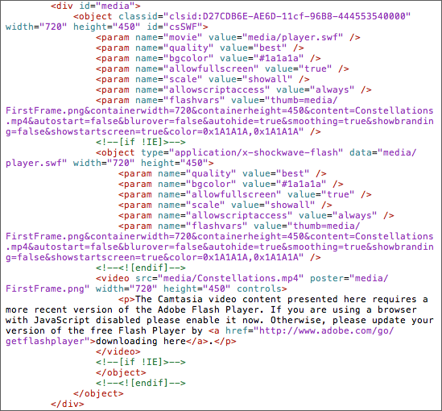

Export as web page:
- Select Share > Export as Web Page.
- Enter a file name in the Export As field and select a location.
- Drag the slider to adjust file size versus video quality.
- Click Export.
Embed a video (MP4) on a web page or blog:
- Select Share > Export as Web Page. Name the file and click Export.
- Open the source code for the index.html file by completing any of the following:
- Open the HTML file in an HTML editor, such as Adobe Dreamweaver.
- Control-click the HTML file and select Open With > TextEdit.
- Double-click the HTML file. In a web browser, select the View Source option. In Safari, select View > View Source.
- Copy the following highlighted code from the index.html file and paste the code under the <head> tag on your web page:

- Copy the following highlighted code from the index.html file and paste the code into the body of your web page where you want to embed the video:

If your website or blog does not support javascript or certain tags, copy the simple embed code from the index.html instead:

- Copy the following files into your web page's directory: index.html and the Media folder.
Note: In some websites or blogs, you may need to edit the code to point to the correct directory path.
If the viewer has the required version of the Flash Player installed, the embedded video displays within the web page or blog. You can also embed a video onto a blog by uploading your video onto Screencast.com and copying the video’s embed code. See Share to Screencast.com.
See also
Export an MP4 video
 Embed a video on a web page or blog
Embed a video on a web page or blog